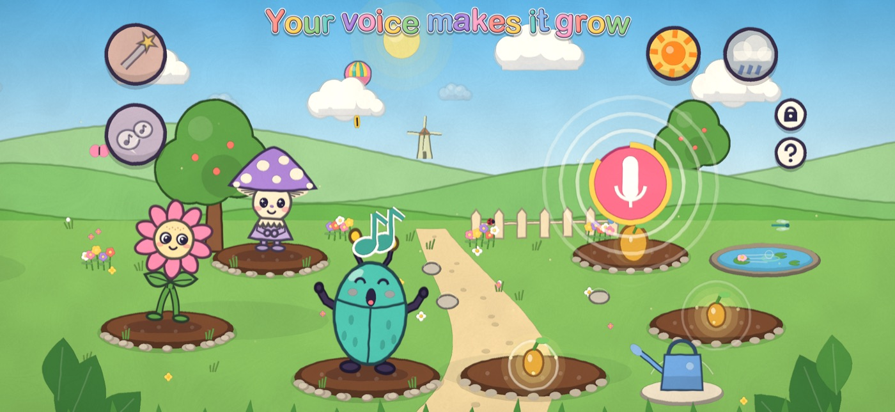
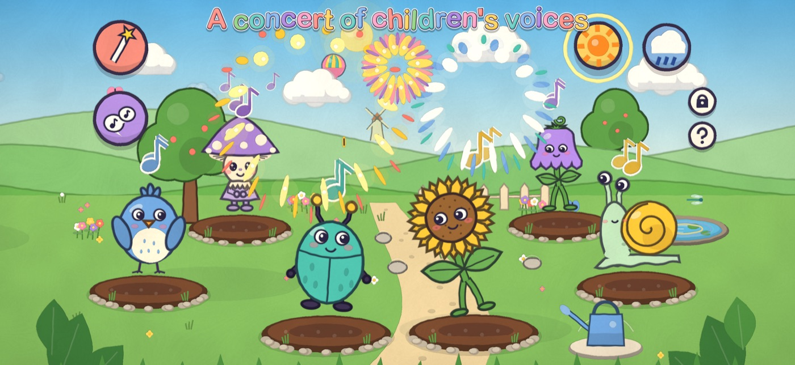
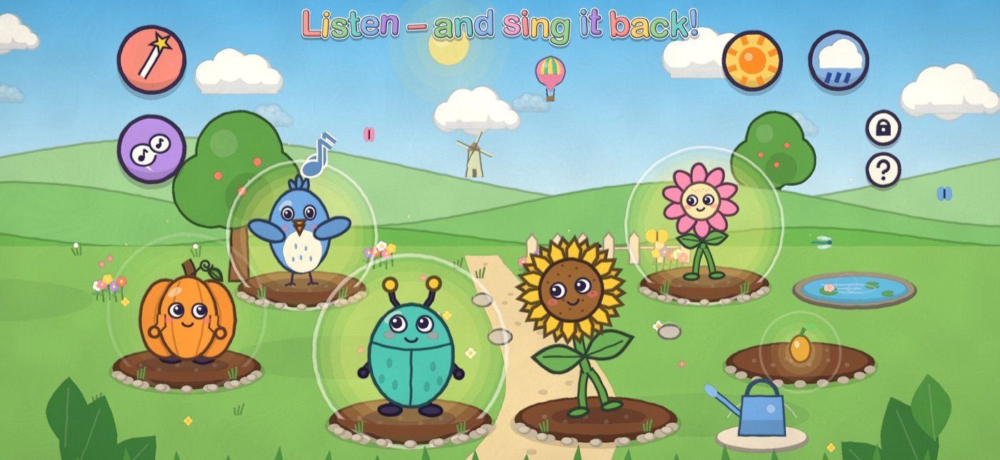

Sing or choose a sound
Use a microphone or explore with 12 built-in sounds.
Make music together
Conduct a garden concert and listen to the creatures sing.
A gentle ending
After a few minutes the garden falls asleep.
Hum Garden is a play space for listening and singing, not a music course or a substitute for lessons. Children can explore at their own pace, without scores or time pressure.
See the garden



For parents – FAQ
Is a microphone needed?
No. There are 12 built-in sounds; a microphone lets children use their own voice.
What happens to recordings?
Recordings stay on the device and can be deleted in the parents’ area, which is protected by a maths question.
What age is it for?
The game is designed for children aged 2–6.
Does it work offline?
Yes. The game works offline, without ads or in-app purchases.
What does it cost?
In the Microsoft Store it is a one-time purchase of €3.99 in Germany. Local prices may differ.